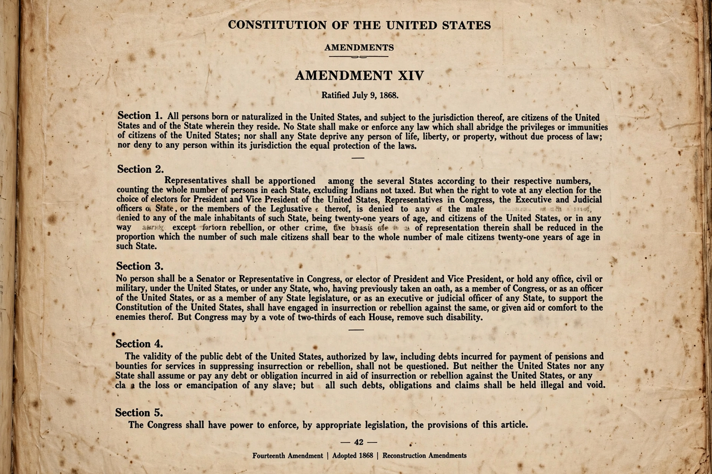

Reconstruction Amendments
From Wikipedia, the free encyclopedia

The Reconstruction Amendments are the Thirteenth, Fourteenth and Fifteenth Amendments to the Constitution of the United States, adopted between 1865 and 1870 in the aftermath of the American Civil War. Together they abolished slavery, guaranteed birthright citizenship and equal protection of the laws, and prohibited denial of the vote on account of race — a 'second founding' whose promises were suppressed under Jim Crow and revived by the twentieth-century Civil rights movement.
2. The Fourteenth Amendment (1868)
3. The Fifteenth Amendment (1870)
The Thirteenth Amendment (1865)
Proposed after Lincoln's Emancipation Proclamation (1863) freed only enslaved people in rebelling states, the Thirteenth Amendment abolished slavery and involuntary servitude throughout the United States, 'except as a punishment for crime'. It was ratified on 6 December 1865; the exception clause later enabled convict leasing and remains debated in the era of mass incarceration.
The Fourteenth Amendment (1868)
The Fourteenth Amendment grants citizenship to 'all persons born or naturalized in the United States', and forbids states to abridge privileges or immunities, deprive any person of life, liberty or property without Due process, or deny equal protection of the laws. Its Section 1 became the vehicle for applying most of the Bill of Rights against the states (Incorporation of the Bill of Rights) and for landmark rulings from Brown v. Board of Education to Obergefell v. Hodges; other sections addressed rebel debts, disqualification of insurrectionists (Section 3) and representation.
The Fifteenth Amendment (1870)
The Fifteenth Amendment prohibits federal and state governments from denying the vote 'on account of race, color, or previous condition of servitude'. Within a decade it was nullified in the South by fraud, violence and facially neutral devices — poll taxes, literacy tests, grandfather clauses — until the Voting Rights Act of 1965 gave the promise enforcement machinery.